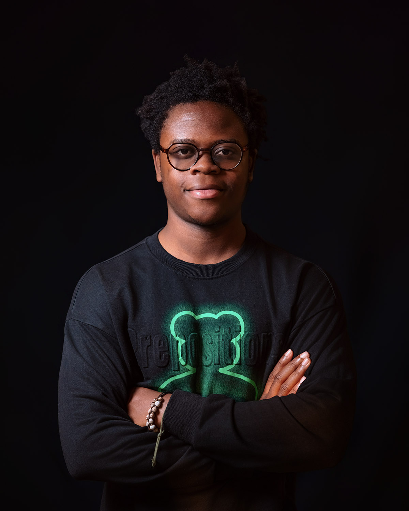
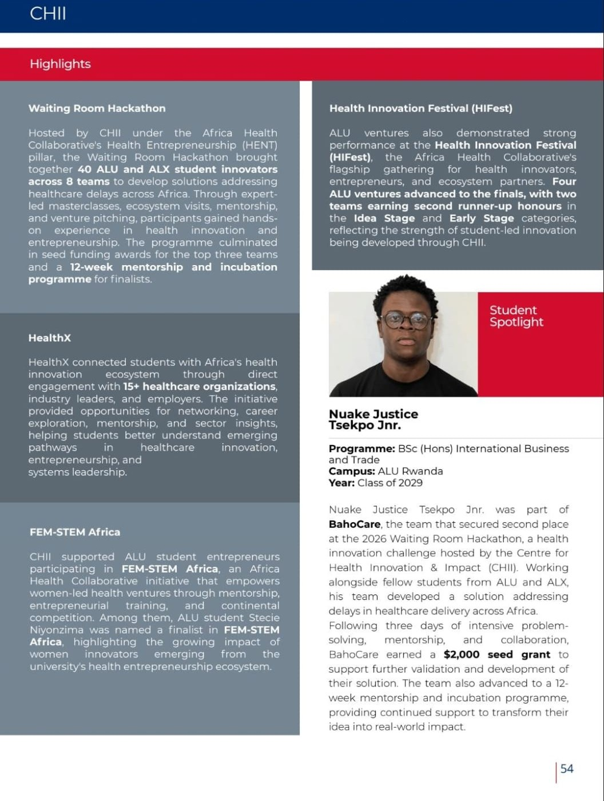
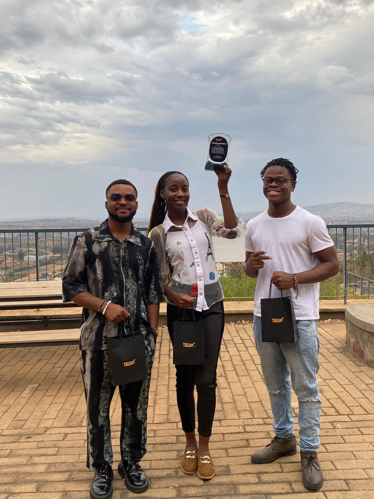
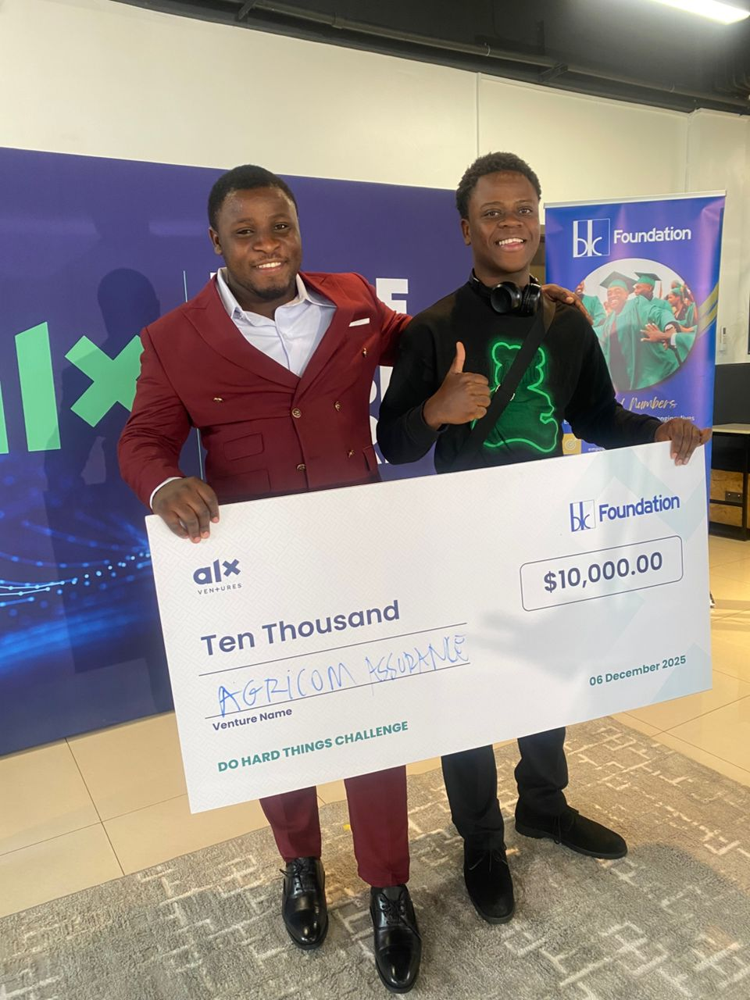
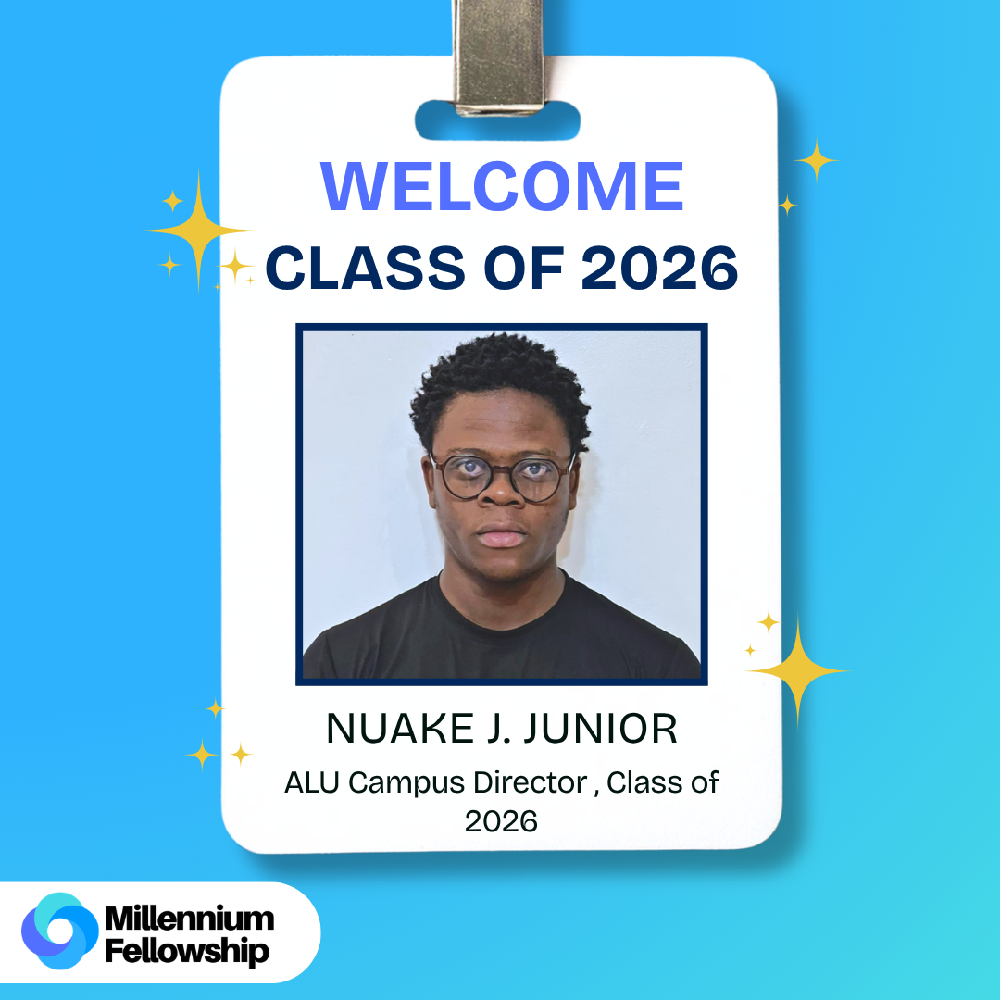
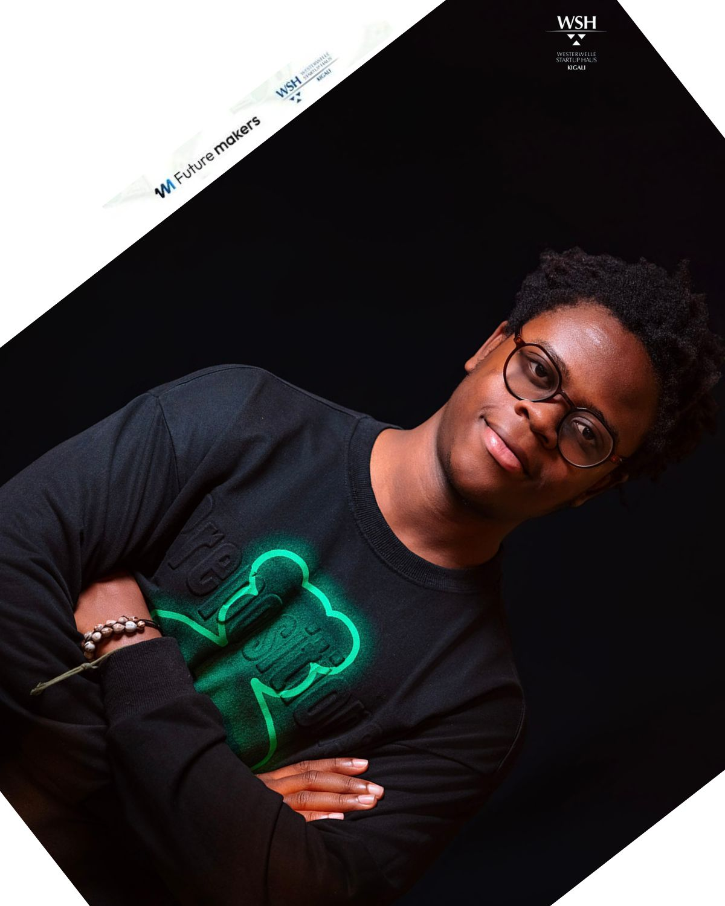
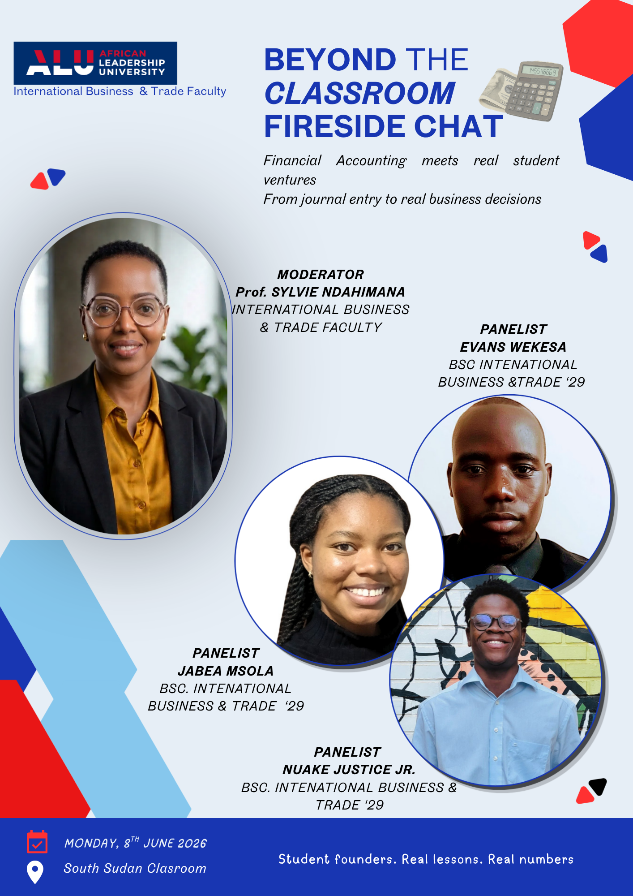

Second-year BSc International Business & Trade student at ALU Rwanda. Venture Lead of DialSense (BahoCare), Campus Director of the Millennium Fellowship, and 2nd-place finisher at TechX Rwanda 2026 with VunaLink.

Each venture starts with a gap Nuake has seen firsthand — in healthcare, agriculture, or access to opportunity — and turns it into a working product with a team behind it.

A health-tech venture building predictive maintenance systems for hospital equipment, starting with dialysis machines, so care is not delayed by preventable equipment failure.

An offline, AI-powered crop disease detection app that helps Rwandan smallholder farmers diagnose diseases and access treatment guidance in Kinyarwanda, without needing internet connectivity.

An early-stage agri-insurance venture Nuake helped build from the ground up, contributing to its early fundraising and competition wins.
Roles where Nuake is responsible for other people's growth and outcomes, not only his own.

Leads ALU Rwanda's Cohort B of the Millennium Fellowship, welcoming and guiding the Class of 2026 fellows.

Selected among only 50 city-wide applicants, and part of the 6% of non-Rwandan international fellows, for this Westerwelle Startup Haus entrepreneurship programme.

Selected as a student panelist for the IBT Faculty's fireside chat, connecting classroom finance to real student ventures.
Use this as reference if you are nominating Nuake for the 18 September Assembly. Feel free to reuse or adapt this text.
Nuake leads multiple ventures at the intersection of technology and impact for underserved African communities. Among his notable achievements, he won 2nd place (Hackathon Runner-Up) at the TechX Rwanda 2026 Hackathon with VunaLink, an offline, AI-powered crop disease detection app that helps Rwandan smallholder farmers diagnose diseases and access treatment guidance in Kinyarwanda, without requiring internet connectivity. He also serves as Venture Lead of DialSense (BahoCare), a health-tech venture building predictive maintenance systems for hospital equipment, beginning with dialysis machines. BahoCare has since onboarded new ALU students to its founding team, in pursuit of a mission to have 80% of its founding team and workforce composed of current ALU students or alumni, strengthening access to opportunity and creating jobs within the ALU ecosystem. He previously served as a Co-Founding Associate at Agricom Assurance Rwanda, an early-stage venture that raised $120,000 in funding, including winning the ALX Do Hard Things Challenge, and later secured a place in the 2026 ALU Ventures Lab program under his contribution. Beyond building ventures, Nuake leads people. He currently serves as Campus Director for the Millennium Fellowship (ALU Rwanda Campus) and Strategy and Implementation Lead for the upcoming Young Trade Society (World Trade Organisation) chapter at ALU. He also spearheads the Growth and Insights projects at Student Companion AI, where he enables five interns in the Marketing and Operations Department to fulfill their skills immersion credits by gaining real-world experience and applying classroom learning in practice. Nuake's vision is to empower and involve ALU students, particularly fellow Mastercard Foundation Scholars, in his entrepreneurial endeavours. He also serves as Publicity Team Lead for the IEEE East Africa Humanitarian Technology Summit, coordinating teams and driving visibility for initiatives that reach hundreds of students and community members.
Nominations close Wednesday, 9 September 2026, 11:59 PM. You can use the write-up above as-is, or write your own based on what you've seen him build.